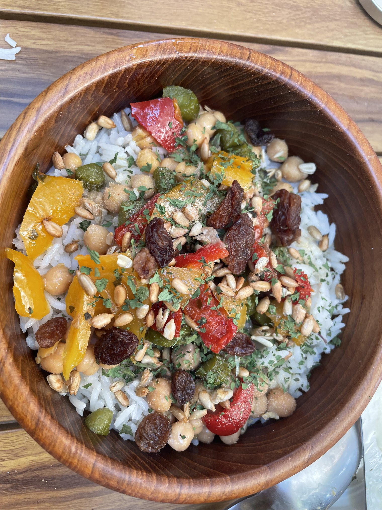

Arroz con pimientos, garbanzos, pepinillos, pasas y pipas
Ingredients
2×
- 150 g de arroz
- 1 bote de pimientos asados
- 200 g de garbanzos cocidos
- 4 pepinillos
- 1 puñado de pasas
- aceite de oliva
- sal
- 2 cdas de pipas de girasol
- perejil

Preparación
Paso 1
Cocer 150 g de arroz en agua con sal, escurrir y dejar templar.
Paso 2
Mezclar con 1 bote de pimientos asados en trozos, 200 g de garbanzos cocidos, 4 pepinillos picados y 1 puñado de pasas.
Paso 3
Aliñar con aceite de oliva y sal, y servir con 2 cdas de pipas de girasol y perejil picado.